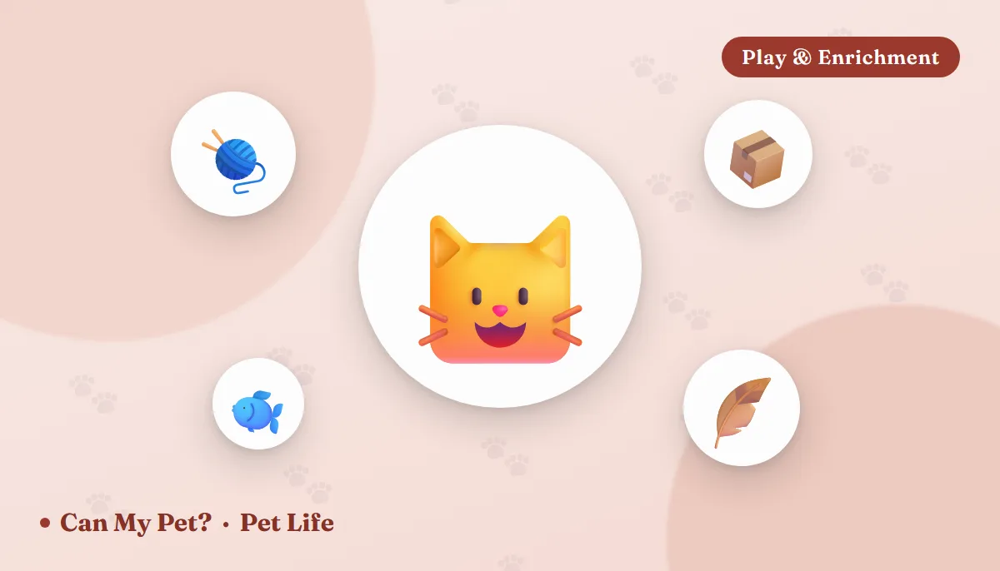

15 Boredom Busters for Cats — Source-Checked Ways to Keep an Indoor Cat Entertained

Indoor cats are safer, longer-lived and lower-risk than cats who roam — but a life without hunting, patrolling or exploring can also get dull fast. Veterinary behaviorists increasingly point to under-stimulation, not just diet or health, as a root cause behind scratching, overgrooming and "acting out" in cats. The fix usually isn't a fancier toy. It's a handful of small, consistent enrichment habits. Here are 15 that actually work, most of them free or nearly free.
How to tell your cat is actually bored (not just being a cat)
Cats are naturally quiet, low-drama animals, so boredom in cats doesn't usually look dramatic — it shows up sideways. Veterinary behaviorists commonly flag overgrooming (bald or thinning patches, especially on the belly or legs), scratching outside the scratching post despite having one, overeating or begging used as a stand-in for stimulation, nighttime zoomies or vocalizing that disrupts sleep, and increased irritability or play-biting toward people or other pets. None of these are "just personality" by default — they're often a cat's version of restlessness, and they're worth ruling out with a vet visit first if they're new or sudden, since some (especially overgrooming) can also signal a medical issue.
15 boredom busters that work
1. A food puzzle feeder Mealtime upgrade
Swapping a flat food bowl for a puzzle feeder turns a 30-second meal into 10–20 minutes of problem-solving that taps directly into a cat's hunting instinct. Start with an easy puzzle so your cat doesn't get frustrated and give up, then work up to harder ones.
Tip: use it for part of the daily food ration, not treats on top, so you're not adding calories.
2. A DIY treat-dispensing bottle Free / 5 min
Cut a few holes slightly larger than a kibble in a clean plastic bottle and drop treats or dry food inside. Cats bat and roll it around to knock pieces loose — a five-minute project that recreates the same "work for it" payoff as a store-bought puzzle.
3. A window perch (with a view) Free – low cost
A stable perch by a window — even just a cleared-off sill or a suction-cup hammock — gives a cat a rotating source of entertainment: birds, squirrels, passing cars, weather. Vets consistently point to window access as one of the highest-value, lowest-effort enrichments available.
Boost it: a bird feeder just outside the glass turns the window into an all-day nature channel.
4. Vertical territory One-time setup
Cats are natural climbers who feel more secure — and stay more mentally engaged — when they can survey a room from up high. A cat tree, wall-mounted shelves, or even a cleared bookshelf gives a cat new routes and vantage points to explore, which matters even in a small apartment.
5. Rotate toys weekly Free
Cats habituate to toys fast — a mouse that was thrilling on Monday is invisible furniture by Thursday. Keep two-thirds of the toy collection in a closed bin and rotate a few out each week; "new" toys don't have to be new purchases, just newly reintroduced.
6. Daily wand-toy play 5–15 min, 1–2x/day
Interactive play with a wand or fishing-pole toy is the closest thing to a real hunt: stalk, chase, pounce, catch. Vets generally recommend one or two short sessions a day, ending with a "catch" so the cat isn't left keyed up with no resolution.
7. Cardboard boxes & paper bags Free
An empty box or a paper shopping bag (handles removed) taps into a cat's instinct to investigate enclosed, hideable spaces. It's genuinely one of the most reliable low-cost enrichments there is — cut a couple of extra holes in a box for an instant hide-and-pounce station.
8. Catnip or silvervine Free – low cost
Roughly 50–75% of cats respond to catnip with a burst of rolling, chasing or zoning-out energy; silvervine works on many cats who don't respond to catnip. Sprinkling a little on a toy or scratching post refreshes interest instantly.
9. Cat grass or a safe plant to nibble Low cost
A small pot of cat grass gives an indoor cat something safe to chew and investigate, and can redirect chewing away from houseplants that may be toxic. See our cat grass safety guide for what's fine and how much is normal.
10. Scatter feeding / treasure hunts Free
Instead of one bowl in one spot, scatter a portion of dry food or treats around a room (or hide small piles in a few safe spots) so your cat has to search room to room. It mimics natural foraging and adds real steps to an otherwise sedentary day.
11. Trick training Free
Cats can learn "sit," "high five," hand targeting and even fetch with short, food-motivated sessions. A few minutes of training is genuine mental exercise and tends to build confidence in shy or anxious cats too.
12. Bird or nature videos Free
For cats without much of a window view, videos of birds, fish or squirrels (widely available online) can hold attention surprisingly well. It's not a replacement for physical play, but it's a solid supplement on a rainy day.
13. A muffin-tin or egg-carton puzzle Free / 5 min
Drop treats into a few cups of a muffin tin or egg carton and loosely cover each with a ball or crumpled paper. Cats have to bat, flip or paw each cover off to get the reward — an easy, adjustable-difficulty DIY puzzle.
14. Crumpled paper & novelty objects Free
A ball of paper, a bottle cap, a pipe cleaner tied in a loop — genuinely novel, unpredictable-moving objects can outperform expensive toys because cats key in on erratic motion. Swap them out often; the novelty is the whole point.
15. Consider a feline companion Bigger decision
Some bored, high-energy cats do best with a compatible playmate, especially cats under two who are left alone for long stretches. This one isn't a quick fix — a poor match can add stress instead of removing it, so talk to a shelter or vet about introductions before deciding.
Match the enrichment to your cat
The same toy lands very differently depending on age, history and temperament. Veterinary guidance on feline environmental needs (the AAFP/ISFM guidelines) stresses that cats differ in what they find rewarding, so treat the table below as a starting point and watch what your cat actually engages with. Not sure what type yours is? Our cat personality types guide helps you narrow it down.
| Your cat | What usually works | Go easy on |
|---|---|---|
| Kitten (under 1 year) | Several very short wand sessions, soft toys, boxes and tunnels, easy puzzle feeders | Long sessions, small toys that can be swallowed, anything with string left out unattended |
| High-energy adult | Two daily wand sessions, vertical climbing routes, harder puzzles, trick training | Repeating the same toy every day |
| Shy or easily startled | Hideaway boxes, high perches, scatter feeding, quiet window time, play from a distance | Loud, fast toys and sudden new objects |
| Senior (roughly 10+) | Low steps or ramps to perches, soft-landing play, sniff-and-search games, warm window beds | High jumps and long, intense bursts of play |
| Overweight cat | Puzzle feeders using the daily ration, short frequent play, scatter feeding | Extra treats as the "reward" for every game |
If your older cat suddenly stops jumping or playing, don't assume they've "just gotten lazy" — stiff joints are common and easy to miss. A vet check is worth it before you write it off as boredom or age.
Enrichment safety check: what to keep out of reach
Most boredom busters are safe, but a few of the most popular cat "toys" cause real emergencies. Do a quick sweep before you buy or build anything new.
- String, yarn, ribbon, dental floss, hair ties and rubber bands. Cats are drawn to long, thin, moving things — and swallowed string can become a dangerous intestinal blockage. Use these only with you holding the other end, then put them away. Our food checker covers edible items, but non-food swallowing is a vet emergency: see the “my pet ate something” tool.
- Paper bags and boxes: handles off, no plastic bags. Plastic bags are a suffocation risk and should never be a play object.
- Lilies and other toxic plants. If you add cat grass or greenery, double-check every plant in the house with our toxic plants for cats list or the plant checker. Lilies in particular are dangerous to cats even in small amounts, per the ASPCA.
- Windows and balconies. A perch is great, but use secure screens and keep high windows closed or fully screened. Falls from open windows are a well-known risk for indoor cats.
- Essential oils and scented diffusers. Some oils are toxic to cats; don't use them as "calming" enrichment. Catnip, cat grass and silvervine are the safer scent options.
- Laser pointers. Fine as a warm-up if you always finish with a physical toy the cat can actually catch; otherwise some cats get frustrated by a "prey" that never gets caught.
What to put in the puzzle feeder (and what to skip)
Food-based enrichment works only if the food is safe. A good rule is to use part of your cat's normal daily ration first, and keep extra treats to around 10% of daily calories (our calorie calculator helps you work out the numbers).
Generally fine in small, plain amounts: your cat's usual dry kibble, freeze-dried or commercial cat treats, and tiny pieces of plain cooked chicken, cooked egg, or tuna in moderation. Many cats also enjoy a lick of plain pumpkin or a small piece of cantaloupe as an occasional treat.
Skip these: anything with onion or garlic (including some baby foods and gravies), chocolate, and xylitol-sweetened foods. Contrary to the old cartoon image, most adult cats are also lactose intolerant to some degree, so skip milk as a "reward". Our full list of foods cats should never eat is worth bookmarking before you start improvising treats.
Catnip, silvervine and the cats that don’t care
Catnip’s effect is inherited, so a cat who shrugs it off isn’t broken. Kittens under roughly six months often don’t react at all, and the effect typically lasts 5–15 minutes before the cat loses interest for a while, so a pinch a few times a week works better than daily doses. Research (Bol et al., 2017, BMC Veterinary Research) found that many cats who ignore catnip respond to silvervine or Tatarian honeysuckle instead, which makes them worth trying if the green stuff gets a blank stare. Eating a little is generally harmless, though a lot may upset the stomach.
A 7-day starter plan
Don’t try all 15 at once. Add one new habit a day and see what sticks:
- Day 1: clear a window sill or add a perch, and note what your cat watches.
- Day 2: serve breakfast in a puzzle feeder or the DIY bottle.
- Day 3: try two 10-minute wand-toy sessions (morning and evening), ending with a catch.
- Day 4: drop a cardboard box with two extra holes where your cat spends time.
- Day 5: scatter-feed one meal across a few rooms.
- Day 6: bring out one “new” toy from the bin and put an old one away.
- Day 7: review. Which did your cat repeat? Keep those, rotate the rest weekly.
For a ready-made system, see our cat toy rotation method, and if your home is small, how to cat-proof an apartment shows how to add vertical space safely.
Fall & holiday enrichment (Halloween is this weekend)
Shorter days and a busy holiday calendar can leave indoor cats under-stimulated and stressed at the same time. A few seasonal tweaks help:
- Halloween (Oct 31): doorbell traffic is a lot for many cats. Give your cat a quiet room with a hideaway box, a puzzle feeder and a window perch away from the front door, and keep candy out of reach (chocolate and xylitol are both dangerous). See our Halloween pet safety guide.
- Daylight saving ends Nov 1 (US): evening gets darker an hour earlier, and a cat used to a fixed dinner-and-play routine may start demanding it early. Shift play and meals gradually over several days, rather than all at once.
- Autumn decor: mini pumpkins, corn stalks and fall wreaths are tempting to chew. Plain pumpkin flesh is fine in moderation, but decorative mums and some seasonal bouquets are not — check them against the toxic plants list.
- Thanksgiving guests: plan a quiet retreat room in advance, and read our Thanksgiving foods guide before the table fills up.
When it’s probably not boredom
Call your vet promptly if you see any of these, rather than adding more toys: bald patches or skin sores from overgrooming, straining in the litter box or peeing outside it, repeated vomiting, a sudden drop in appetite or water intake, hiding for more than a day, or any labored breathing (that last one is an emergency — see our emergency guide). Pain, urinary problems, allergies and thyroid disease can all look like “acting out” at first.
Building a simple daily routine
- Morning: a puzzle feeder for part of breakfast.
- Midday: window access, and a rotated toy left out.
- Evening: 10–15 minutes of wand play, ending in a "catch" and a small treat, then a calm wind-down before bed.
- Weekly: rotate the toy bin, refresh catnip, add one new hiding spot or box.
Consistency tends to matter more than variety — a cat who reliably gets 15 minutes of real engagement a day is usually calmer than one who gets an expensive toy once a month.
Frequently asked questions
How much playtime does an indoor cat actually need?
Most vets suggest at least two 10–15 minute sessions of interactive (wand-style) play per day, on top of independent enrichment like puzzles and window access. Kittens and younger cats generally need more.
My cat ignores every toy I buy — what am I doing wrong?
Probably nothing — most cats habituate to toys within days. Try rotating toys weekly instead of leaving them all out permanently, and prioritize toys with erratic, prey-like movement over ones that just sit still.
Is a bored cat the same as a stressed cat?
Not exactly, but they overlap. Boredom (under-stimulation) and stress (environmental or social anxiety) can produce similar behaviors like overgrooming or litter box issues, so it's worth considering both, and ruling out a medical cause with your vet if signs are new.
Can two bored cats entertain each other instead?
Sometimes, if they're well-matched and properly introduced, but not always — some cats prefer being an only cat and a mismatched pairing can increase stress rather than solve boredom. Enrichment routines are still worth building either way.
Is catnip safe, and can a cat have too much?
Catnip is considered safe for cats. Most cats just get a short burst of play, rolling or relaxation. Eating a lot can cause mild stomach upset, so offer small amounts a few times a week rather than every day. About a third of cats don't react at all, and kittens under about six months often ignore it.
Are laser pointers bad for cats?
They aren't harmful in themselves, but a dot can never be caught, which frustrates some cats. If you use one, end the session by tossing a treat or a physical toy your cat can "kill", so the hunt has a satisfying finish. Never shine it toward eyes.
What can I put in a puzzle feeder besides kibble?
Use part of your cat's normal daily food first. For extras, small bits of plain cooked chicken, cooked egg or commercial cat treats work well in moderation. Avoid onion, garlic, chocolate, xylitol and milk, and keep treats to about 10% of daily calories.
Is it okay to leave string or yarn out as a toy?
No. Swallowed string, yarn, ribbon and hair ties can cause serious intestinal blockages. Use string toys only while you are holding them and put them away afterward. If your cat swallows string, contact a vet right away.
How do I enrich a small apartment for a cat?
Go vertical: a cat tree, wall shelves or a cleared bookshelf adds usable space without using floor area. Add a window perch, rotate a small set of toys, and use puzzle feeders at mealtimes. See our guide to cat-proofing an apartment for safe setups.
By the CanMyPet Editorial Team · Reviewed against ASPCA, AAFP/ISFM and veterinary enrichment guidance · Published August 2026 · Updated October 29, 2026.